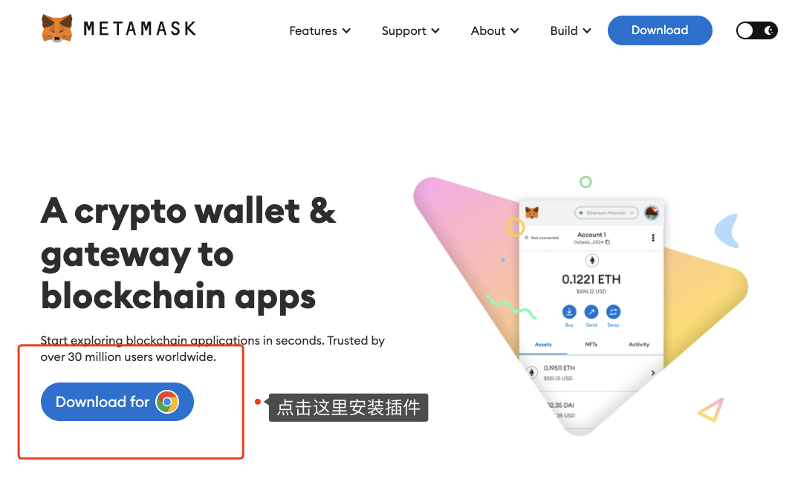
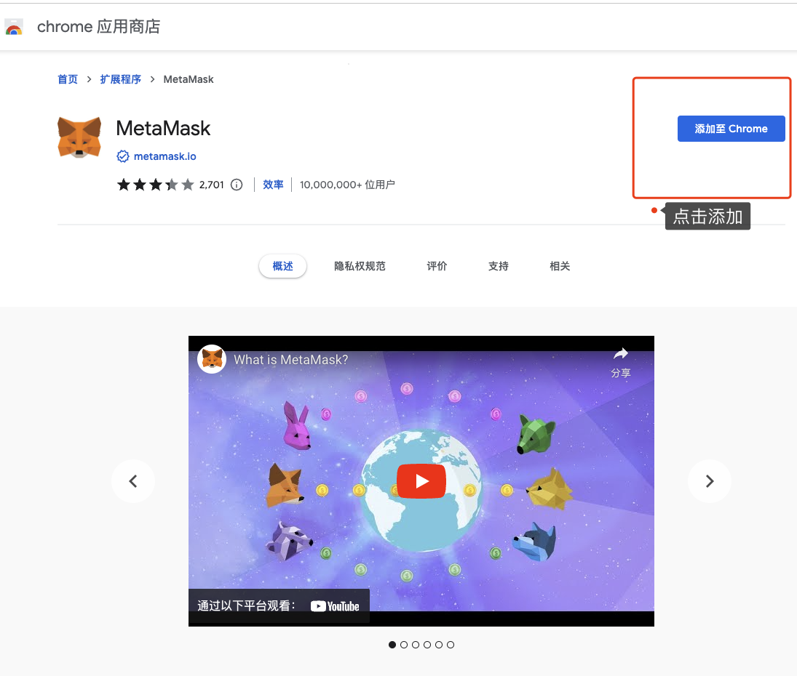
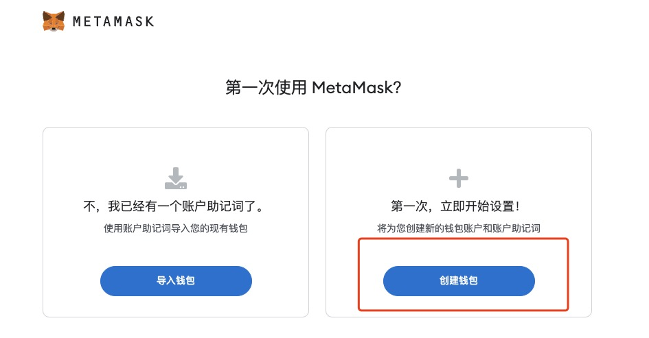
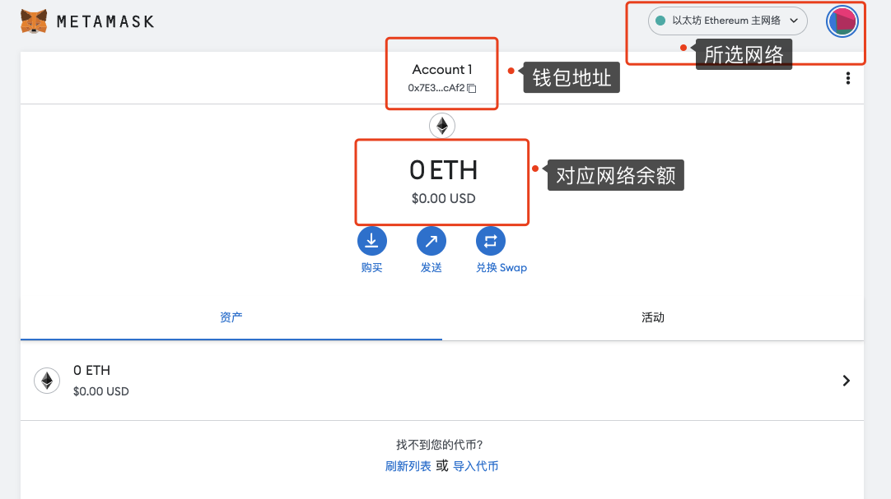

Get Started With Web3: 第一个 Web3 身份
自学入门 Web3 不是一件容易的事，作为一个刚刚入门 Web3 的新人，梳理一下最简单直观的 Web3 小白入门教程。整合开源社区优质资源，为大家从入门到精通 Web3 指路。每周更新 1-3 讲。
欢迎关注我的推特：@bhbtc1337
北航区块链协会 DAO 推特：@BHBA_DAO
进入微信交流群请填表：表格链接
文章开源在 GitHub：Get-Started-with-Web3
Web3 简述
Web3 是一个开放的网络，任何人都可以在上面建立自己的应用，而不需要依赖于任何中心化的服务。就技术而言，Web3 是基于区块链技术的去中心化网络。另一种更符合现状的说法是在 Web2 网站上加上小狐狸钱包 Metamask，这个网站就变成了 Web3 网站😂。
小狐狸钱包 Metamask 简述
Metamask 是一个去中心化的钱包浏览器插件，可以让用户轻松接入 Web3 的世界，绝大多数 Web3 项目都支持 Metamask。
使用 Metamask 创建第一个 Web3 身份
与动不动就要关联手机号的 Web2 不同，创建 Web3 身份的过程简单的令人感到不可思议。我们接下来会带领大家使用 Metamask 创建一个 Web3 身份，保证全过程不超过 5 分钟。
创建 Web3 身份拢共分几步？三步！
- 第一步：安装
Metamask浏览器插件 - 第二步：创建
Metamask账户 - 第三步：备份
Metamask账户
第一步：安装 Metamask 浏览器插件
用 Chrome 浏览器访问 Metamask 官网，点击 Get Chrome Extension，然后点击 Add to Chrome，即可安装 Metamask 浏览器插件。


第二步：创建 Metamask 账户
点击 Metamask 浏览器插件，点击 开始使用，点击 我同意，点击 创建钱包，设置密码后即可创建 Metamask 账户。

第三步：备份 Metamask 账户
第一次创建账户默认会进行备份，推荐找个僻静地方抄到纸上，或者存到 1Password 等密码管理工具中，如果选择复制助记词到电脑上最好进行加密存储。

Metamask 界面
恭喜你，你已经拥有了一个 Web3 身份。我们来熟悉一下 Metamask 的界面。

- 最上面的
Ethereum Mainnet是网络选择，默认选择Ethereum Mainnet 0x...是你的Metamask账户地址0 ETH是你的Metamask账户余额
总结
你可能注意到在生成 Web3 身份的过程中没有任何验证，这意味着在 Web3 世界里人们就像戴上了一层面具，任何人都可以随意创造自己的身份，这创造了空前的自由，也放大了人性的善良和恶意，意味着在 Web3 世界里，你不能相信任何人，需要更加小心地保护自己，任何时候都要 Do Your Own Research。
恭喜看到这里的你🎉你已经踏出了去往 Web3 世界的第一步，祝你玩得愉快！